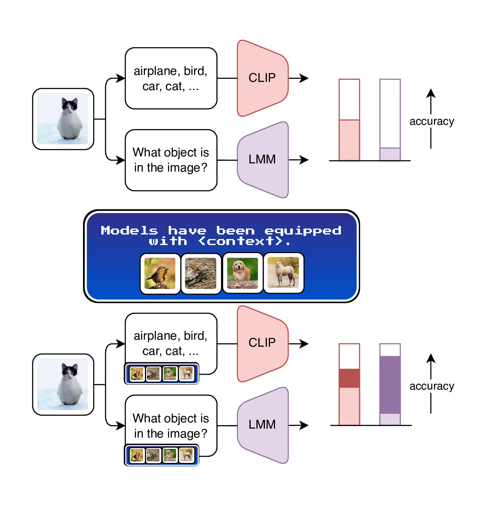
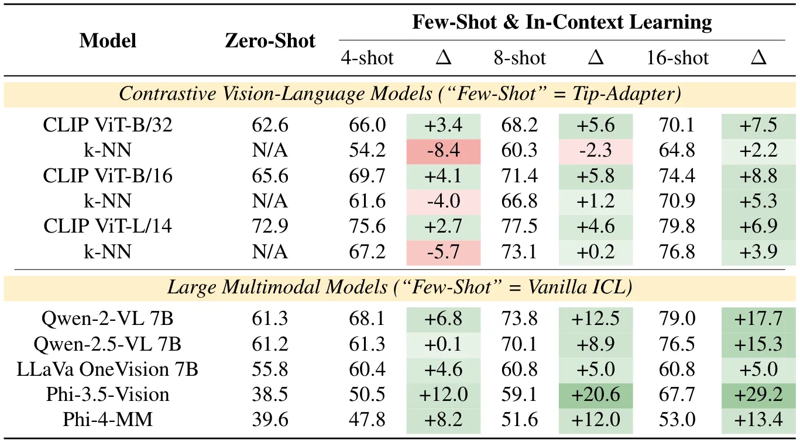
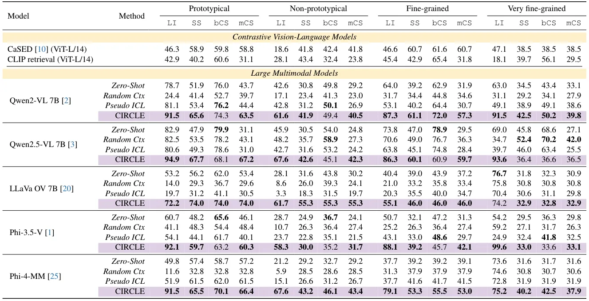
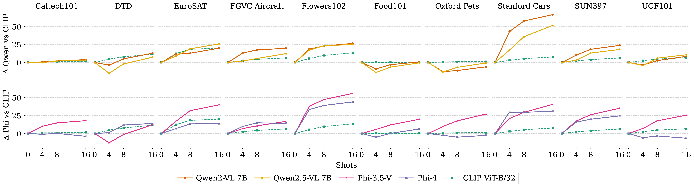
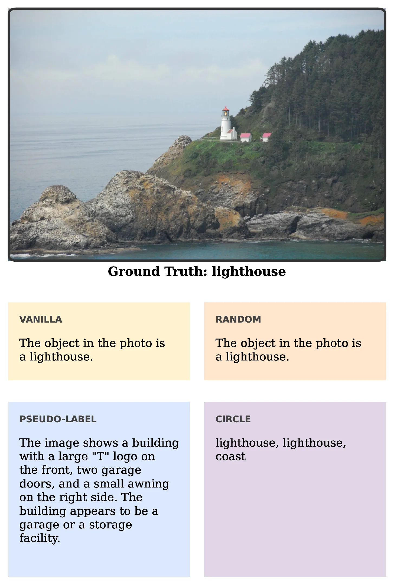
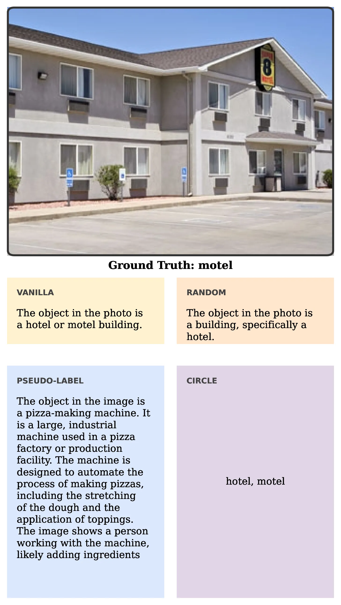
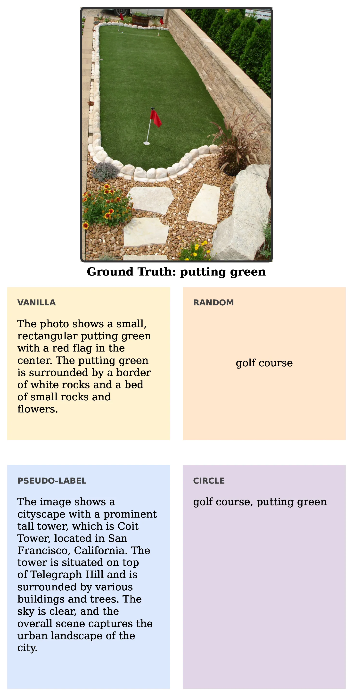

Large Multimodal Models as General In-Context Classifiers
Key Contributions
- The first systematic analysis of ICL in LMMs for closed-world image classification.
- In-depth comparison of LMM behavior and caching-based VLMs, showing that LMMs with ICL can match and even surpass VLMs.
- Introduction of CIRCLE, a new approach that enhances LMMs for open-world classification using only unlabeled images as ICL examples, iteratively refining their pseudo-labels.
- Extensive benchmarking of CIRCLE against naïve ICL, showing that the latter struggles in open-world settings.
- Performance improvements: CIRCLE largely improves the performance of the base model, consistently surpassing VLMs, making a valid case for adopting LMMs for discriminative tasks.
Abstract
Which multimodal model should we use for classification? Previous studies suggest that the answer lies in CLIP-like contrastive Vision-Language Models (VLMs), due to their remarkable performance in zero-shot classification.
In contrast, Large Multimodal Models (LMM) are more suitable for complex tasks.
In this work, we argue that this answer overlooks an important capability of LMMs: in-context learning.
We benchmark state-of-the-art LMMs on diverse datasets for closed-world classification and find that, although their zero-shot performance is lower than CLIP's, LMMs with a few in-context examples can match or even surpass contrastive VLMs with cache-based adapters, their "in-context" equivalent.
We extend this analysis to the open-world setting, where the generative nature of LMMs makes them more suitable for the task.
In this challenging scenario, LMMs struggle whenever provided with imperfect context information.
To address this issue, we propose CIRCLE, a simple training-free method that assigns pseudo-labels to in-context examples, iteratively refining them with the available context itself.
Through extensive experiments, we show that CIRCLE establishes a robust baseline for open-world classification, surpassing VLM counterparts and highlighting the potential of LMMs to serve as unified classifiers, and a flexible alternative to specialized models.
Method

As shown in the intro video, CIRCLE consists of three main steps:
- Pseudo-labeling: the LMM assigns an initial pseudo-label to each example. Images are processed independently of one another.
- Iterative refinement: using all the other images, CIRCLE updates the label for the i-th one. Specifically, it focuses on their differences, to narrow down the label space and converge towards the correct granularity level. This process is repeated multiple times.
- Inference with ICL: the context constructed in the previous steps consists of (image, labels) pairs. When new inputs arrive, the LMM can directly predict multiple labels as instructed by the context it autonomously built.
Quantitative Results • Closed-World

Averaged accuracy over the ten datasets. Higher is better, bold indicates best. Detailed, per-dataset results, as well as different context sizes, are available in the Supplementary Material.
Quantitative Results • Open-World

The table reports results for Llama Inclusion (LI), Semantic Similarity (SS), Concept Similarity (bCS), and Median Concept Similarity (mCS). Purple indicates CIRCLE. Higher is better on all metrics. For each LMM, bold indicates the best result. An extended version of this table is available in the Supplementary Material.
Sample Efficiency Plots

We visualize the relative improvement of a k-shot context w.r.t. the corresponding zero-shot model. For contrastive VLMs (dashed lines), we use Tip-Adapter. For LMMs (solid lines), we leverage a simple Vanilla ICL setup. We report both the Qwen family (top row) and the Phi series (bottom row). LMMs benefit much more from additional context than VLMs on most datasets, with peaks of up to >+50% (e.g., Qwen2-VL 7B on Stanford Cars, Phi-3.5-Vision on Flowers102). In contrast, CLIP ViT-B/32 peaks at approximately +25%.
Qualitative Results

Qwen2-VL 7B compared as a vanilla model with random context, pseudo-labels, and CIRCLE.

Qwen2-VL 7B compared as a vanilla model with random context, pseudo-labels, and CIRCLE.

Qwen2-VL 7B compared as a vanilla model with random context, pseudo-labels, and CIRCLE.
BibTeX
@inproceedings{garosi2026circle,
title={Large Multimodal Models as General In-Context Classifiers},
author={Garosi, Marco and Farina, Matteo and Conti, Alessandro and Mancini, Massimiliano and Ricci, Elisa},
booktitle={Proceedings of the IEEE/CVF Conference on Computer Vision and Pattern Recognition Findings},
year={2026}
}